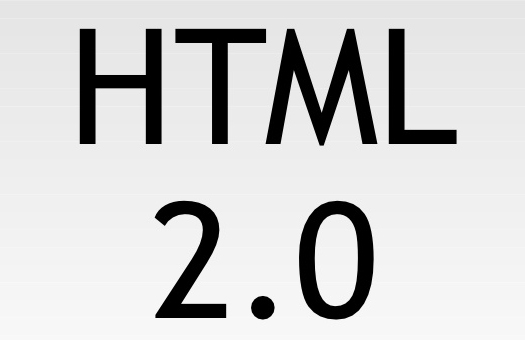

First generation of Html

In 1989, Tim Berners-Lee invented the web using Hyper Text Markup Language.
He uses Standard Generalized Markup Language as a base in HTML 1. The title
tag was taken from SGML and was put into his HTML. Tags such as P, H1, H2,
H3, H4, H5, H6, ol, li, ul, etc. were elements that were taken from SGML and
used in HTML. HREF and the "a" tag were invented by Tim so you can use
hyperlinks within the web. David Raggett took great interest in Tim's HTML.
He ended up visting Tim, and he created HTML+ which is technically a better
version of HTML.
Source: Ida Engholm, First-generation websites, www.researchgate.net, ()
HTML 2
- 
In 1994, HTML 2 was released by Dan Connolly. Dan took all the popular and
most widely used tags in HTML and put them in HTML 2. Later in the same
year, a group was formed called "The World Wide Web Consortium." Eight
people made up the group. Dave Raggott worked on HTML. Arnaud Le Hors
worked on HTML. Dan Connolly as well worked on HTML. Hypertext Transfer
Protocol (HTTP) was worked on by Henrik Frystyk Nielson. Hakon Lie was
working on style sheets. Bert Bos was working on style sheets and layouts. Jim
Miller was looking at the technologies. Chris Lilley, the last man of the group,
worked on style sheets and fonts. In 1995, RBgcolor, font styles,
background-colors, and text colors were new HTML tags they added.
Source: Ava Garcia, html 2 logo, bacsoftwareconsulting.com, ()
HTML 3

In March of 1995, HTML 3 emerged. It was published in a document. HTML 3
added many new tags. One of the new tags were changing the img tag to a fig
tag. Dave Raggett added the style tag and class attributes to HTML 3. He also
wokred on adding tables, forms, tabs, and footnotes. Two years later, HTML 3.2
was published. Better tables were added, applets, text-flow around images,
subscripts and superscripts.
Source: Kacheee, html 3 logo, cleanpng.com, ()
HTML 4
In 1998 HTML 4 was published. It had added things such as scripting, frames,
emedding objects, direction of text, better tables, and improved the forms.
Source: Wisdom IT Services India Pvt. Ltd, html 4 logo, wisdomjobs.com, ()
HTML 5
HTML 5 is an improved version of HTML 4. It uses one interface. This makes
putting elements on there easier. HTML 5 supports mobile devices whereas
HTML 4 did not. HTML 5 added fourteen new attributes. These consist of
placeholder, autofocus, autocomplete, required, pattern, list, multiple, novalidate,
formnovalidate, form, formaction, formenctype, formmethod, and formtarget.
HTML 5 is also three different kinds of code. The three styles are HTML,
JavaScript, and CSS. HTML 5.